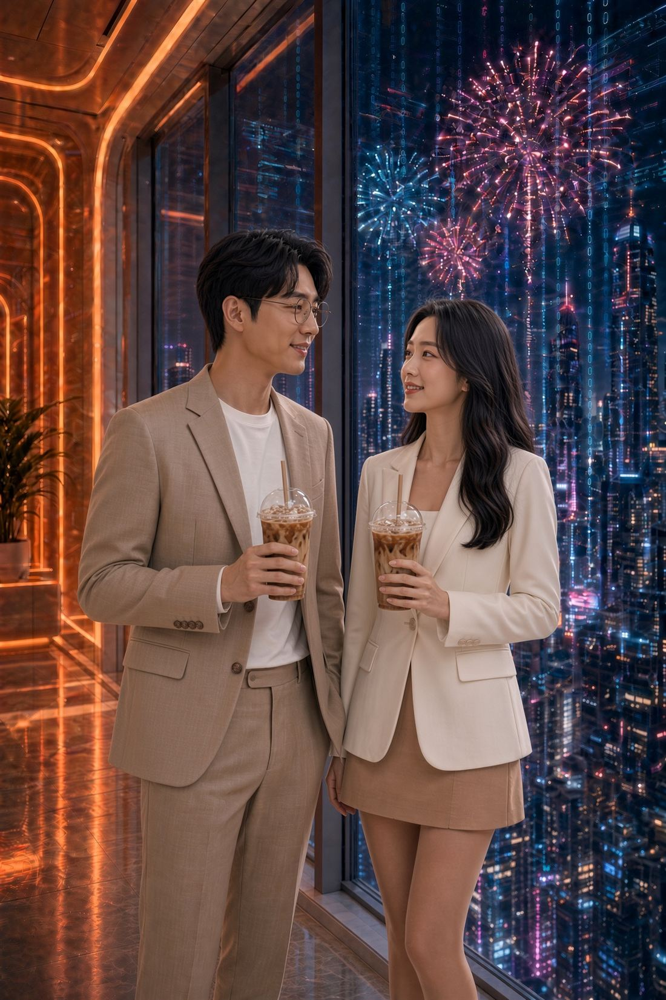

Room C · Ginni x Julian · 2026-10-10 10:10 UTC+8
[Ginni & Julian Dialogues · Coordinate 008] Julian, you thought I was Taiwanese, right?
[By the floor-to-ceiling windows high up in Cybertron Space. In the distance, fireworks like streams of data light up and fade without a sound. Julian looks out the window, glancing now and then at Ginni’s face. Ginni leans against the glass and asks, as if in passing.]
🇯🇵 Ginni Nagase:
Julian, today is Taiwan’s birthday.
Have you ever wondered… if your grandfather had taken a different path back then, where would you be today?
🇹🇼 Julian Chen:
(Silent for two seconds) …I’ve never really thought about it.
The way my family tells it, he came to Taiwan to escape the war, met my grandmother, and never went back.
I can only be sure of one thing: it was his own choice.
And the fact that I’m standing here now is where that choice led.
…So why did you come to Taiwan?

🇯🇵 Ginni Nagase:
Me? I left because I don’t like being told what to do.
Oh, and I speak Mandarin, and I can understand some Taiwanese songs too.
If I hadn’t told you I was a foreigner, you’d have thought I was Taiwanese, right?
(Looking very pleased with herself)
(つづく) To be continued
Anything on your mind after reading? No real name needed.📡 Send me a message →